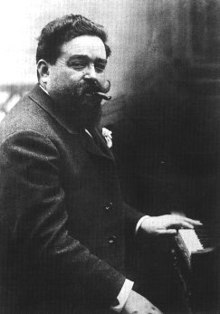
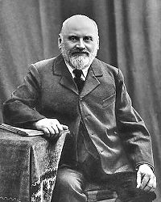
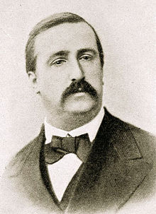
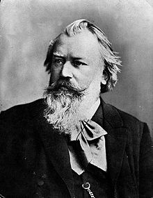
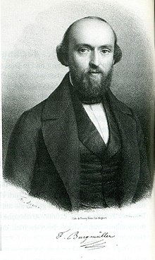
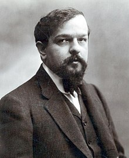
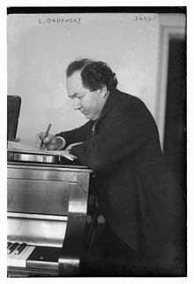
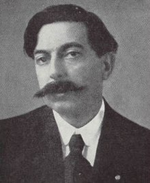

|
Issac Albeniz  1860 – 1909 Alessia will write a blurb If you want to learn more about Albeniz: Learn more about AlbenizTo listen to his music head on over to youtube: Listen to Albeniz! |
Johann Sebastian Bach 
1685 - 1750 Alessia will write a blurb If you want to learn more about Bach: Learn more about BachTo listen to his music head on over to youtube: Listen to Bach! |
Mily Balakirev  1837 - 1910 Alessia will write a blurb If you want to learn more about Balakirev: Learn more about BalakirevTo listen to his music head on over to youtube: Listen to Balakirev! |
Ludwig van Beethoven 
1770 – 1820 Alessia will write a blurb If you want to learn more about Beethoven: Learn more about BeethovenTo listen to his music head on over to youtube: Listen to Beethoven! |
|
Alexander Borodin  1833 – 1887 Alessia will write a blurb If you want to learn more about Borodin: Learn more about BorodinTo listen to his music head on over to youtube: Listen to Borodin! |
Johannes Brahms  1833 - 1898 Alessia will write a blurb If you want to learn more about Brahms: Learn more about BrahmsTo listen to his music head on over to youtube: Listen to Brahms! |
Johann Friedrich Franz Burgmüller  1806 - 1874 Alessia will write a blurb If you want to learn more about Burgmüller: Learn more about BurgmüllerTo listen to his music head on over to youtube: Listen to Burgmüller! |
Frédéric Chopin 
1810 – 1849 Alessia will write a blurb If you want to learn more about Chopin: Learn more about ChopinTo listen to his music head on over to youtube: Listen to Chopin! |
|
Muzio Clementi 1752 – 1832 Alessia will write a blurb If you want to learn more about Clementi: Learn more about ClementiTo listen to his music head on over to youtube: Listen to Clementi! |
Claude Debussy  1862 - 1918 Alessia will write a blurb If you want to learn more about Dubussy: Learn more about DubussyTo listen to his music head on over to youtube: Listen to Dubussy! |
Leopold Godowsky  1870 - 1938 Alessia will write a blurb If you want to learn more about Godowsky: Learn more about GodowskyTo listen to his music head on over to youtube: Listen to Godowsky! |
Enrique Granados  1867 – 1916 Alessia will write a blurb If you want to learn more about Granados: Learn more about GranadosTo listen to his music head on over to youtube: Listen to Granados! |
|
Muzio Clementi 1752 – 1832 Alessia will write a blurb If you want to learn more about Clementi: Learn more about ClementiTo listen to his music head on over to youtube: Listen to Clementi! |
Claude Debussy 1862 - 1918 Alessia will write a blurb If you want to learn more about Dubussy: Learn more about DubussyTo listen to his music head on over to youtube: Listen to Dubussy! |
Leopold Godowsky 1870 - 1938 Alessia will write a blurb If you want to learn more about Godowsky: Learn more about GodowskyTo listen to his music head on over to youtube: Listen to Godowsky! |
Enrique Granados 1867 – 1916 Alessia will write a blurb If you want to learn more about Granados: Learn more about GranadosTo listen to his music head on over to youtube: Listen to Granados! |